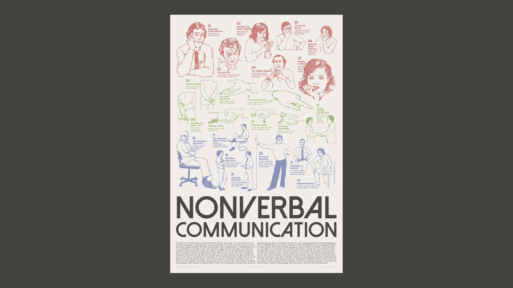

Poster
Nonverbal Communication

Mar 2024
Printed matter
24 x 36 inch
Printed matter
24 x 36 inch
This poster visualizes key concepts of nonverbal communication through a series of categorized gestures and body language cues.
Using sourced illustrations, the layout organizes the information by color and posture type.
The title is set in a bold, magazine-style font to give the piece a sense of editorial authority and visual weight.
The clear hierarchy helps guide the viewer’s eye while emphasizing the nuances of human interaction beyond words.